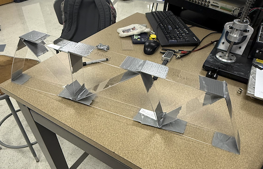

Designed and built an acrylic truss to maximize load-to-cost ratio, predicted failure loads using buckling analysis across nominal, strong, and weak cases, and tested the physical truss to see how it held up.
The goal was to design a simple truss that could support a minimum load of 32 oz for 60 seconds while maximizing the load-to-cost ratio. The truss had to be built from two 4-foot and one 2-foot acrylic bars, with straight members connected only at the ends and no crossing or doubled members. It was supported by one pin and one roller at either end, with a single downward load applied at a specified joint.
We started by evaluating two candidate designs: a Pratt truss with 9 joints and 15 members and a Howe-Warren hybrid with 8 joints and 13 members. Design 1 had a member that fell out of the allowable length range, so we went with Design 2. The task was to predict the failure load, identify the critical member, and verify the design met the 32 oz requirement before building it.

final truss, Howe-Warren hybrid, 8 joints and 13 members, acrylic bar construction
Our final design was a Howe-Warren hybrid. A vertical member at the load joint provides direct load transfer and local stiffness, while the remaining web members follow a Warren-style zigzag that spreads the load across the span efficiently. We made the truss intentionally tall because increasing the profile height reduces internal member forces for a given load, which improves buckling resistance. This is especially important for compression members, which fail by buckling rather than yielding.
We used a software model to run three prediction cases: nominal, strong, and weak, based on the uncertainty in buckling strength from earlier lab calibration tests. The predicted failure load came out to 61.51 plus or minus 11.95 oz. The critical member was m4, a 7.81 inch compression member connecting joints J1 and J5. We made one adjustment from the preliminary design: member m7 was increased from 5.00 to 6.00 inches to meet the minimum joint-to-joint span requirement.
The predicted maximum load of 61.51 oz exceeded the 32 oz requirement at both the nominal and strong-case bounds, giving a comfortable safety margin. Member m4 was identified as the critical member across all three cases. The load-to-cost ratio for the final design was 0.3418 oz per dollar at a total truss cost of $179.97.
| Member | Length (in) | T/C | Internal Force (oz) |
|---|---|---|---|
| m1 | 10.00 | T | 17.14 |
| m4* (critical) | 7.81 | C | 26.78 |
| m7 | 6.00 | C | 34.29 |
| m8 | 7.00 | C | 34.29 |
| m13 | 7.21 | C | 13.74 |
The report covers the full design process from preliminary designs to the final Howe-Warren hybrid, the buckling analysis and three-case failure predictions, the member force table, and a discussion on what the Hartford Civic Center collapse taught us about relying on computer analysis without physical cross-checking. Written with group members Jiahui Chen and Bilqees D'Urso.
↓ open report in new tab